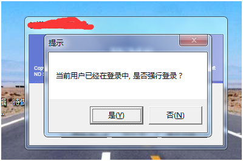
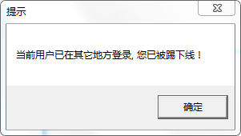

软件类型：CS
开发工具：Delphi
功能：限制同一账户多地登录并选择强行踢人操作。
1、 采用临时表判断当前账户是否已经登录。创建一个全局临时表CREATE TABLE ##UserID (ID int);其中##UserID为表名，UserID为当前用户的唯一ID。关于临时表，可以百度一下，本地临时表，全局临时表。这里创建为全局临时表。
2、 通过判断该临时表是否存在读取当前用户是否在登录的状态。
function TLoginFrm.UserLogined(AdoConn: TADOConnection; AUserID: string): Boolean;
var
Qry: TADOQuery;
strSQL: string;
begin
try
QryCreate(Qry,AdoConn);
try
strSQL := Format('SELECT OBJECT_ID(N''tempdb..##%s'', N''U'') AS TabID', [AUserID]);
Qry.SQL.Text := strSQL;
Qry.Open;
result := not Qry.FieldByName('TabID').IsNull;
finally
Qry.Free;
end;
except
Result := False;
Exit;
end;
end;
3、 当前登录用户表增加用户在线状态字段”online”默认值为0。登录成功时，创建临时表并更新当前用户状态为1。注：0离线，1在线；
function TLoginFrm.RegUserLogined(AdoConn: TADOConnection; AUserID: string): Boolean;
var
Qry, QryComm: TADOQuery;
strSQL: string;
begin
try
QryCreate(Qry,AdoConn);
QryCreate(QryComm, adocCommon);
try
strSQL := Format('CREATE TABLE ##%s(ID int); ', [AUserID]);
Qry.SQL.Text := strSQL;
Qry.ExecSQL;
strSQL := Format('update Personnel_set set online=1 where Per_id=%S', [QuotedStr(AUserID)]);
QryComm.SQL.Text := strSQL;
QryComm.ExecSQL;
finally
Qry.Free;
QryComm.Free;
end;
except
Result := False;
Exit;
end;
Result := True;
end;
4、 点击确定按钮登录界面
//判断 当前登录用户是否已经登记
if not UserLogined(adocWMS, adoqPersonnal.FieldByName('EmployeeCode').AsString) then
begin
//针对 异常退出未更新人员在线状态的情况，更新人员状态为0
if GetUserOnline(adocCommon, adoqPersonnal.FieldByName('EmployeeCode').AsString) then
UpdateOnline(adocCommon, adoqPersonnal.FieldByName('EmployeeCode').AsString);
//创建临时表记录当前人员的登录状态
RegUserLogined(adocWMS, adoqPersonnal.FieldByName('EmployeeCode').AsString)
end else begin
if MessageBox(Handle, '当前用户已经在登录中, 是否强行登录？', '提示', MB_YESNO)=id_yes then
begin
//更新登录状态 = 0
UpdateOnline(adocCommon, adoqPersonnal.FieldByName('EmployeeCode').AsString);
//设置timer事件监控人员状态为0且临时表存在的情况直接踢下线。等用户下线/
while UserLogined(adocWMS, adoqPersonnal.FieldByName('EmployeeCode').AsString) do
begin
//
end;
//重新注册 临时表。
RegUserLogined(adocWMS, adoqPersonnal.FieldByName('EmployeeCode').AsString);
end else
Exit;
end;
5、 监控人员登录状态，人员状态为0且临时表存在的情况直接踢下线。这里涉及了一个非阻塞式的弹出提示框。
function WTSSendMessage(Server: HWND; SessionId: DWORD; Title: PChar;
TitleLength: DWORD; AMessage: PChar; MessageLength: DWORD; Style: DWORD;
Timeout: DWORD; var Response: DWORD; Wait: Boolean): Boolean; stdcall;
external 'wtsapi32.dll' name 'WTSSendMessageA';
function WTSGetActiveConsoleSessionId: DWORD; stdcall;
external kernel32 name 'WTSGetActiveConsoleSessionId';
procedure TLoginFrm.Timer1Timer(Sender: TObject);
const
WTS_CURRENT_SERVER_HANDLE = 0;
var
nTitle, nMessage: string;
nResponse: DWORD;
begin
if UserLogined(adocCommon, Parameter[4]) and not GetUserOnline(adocCommon, Parameter[4]) then
begin
Timer1.Enabled := False;
nTitle := '提示';
nMessage := '当前用户已在其它地方登录, 您已被踢下线！';
WTSSendMessage(WTS_CURRENT_SERVER_HANDLE, WTSGetActiveConsoleSessionId,
PChar(nTitle), Length(nTitle), PChar(nMessage), Length(nMessage),
MB_OK, 0, nResponse, False);
TerminateProcess(GetCurrentProcess, 0);
end;
end;
6、 获取、更新人员状态函数。
function TLoginFrm.GetUserOnline(AdoConn: TADOConnection; AUserID: string): Boolean;
var
QryComm: TADOQuery;
begin
Result := False;
QryCreate(QryComm, AdoConn);
try
QryComm.SQL.Text := Format('select online from Personnel_set where per_id=%S', [QuotedStr(AUserID)]);
QryComm.Open;
if QryComm.FieldByName('online').AsInteger = 1 then
Result := True;
finally
QryComm.Free;
end;
end;
function TLoginFrm.UpdateOnline(AdoConn: TADOConnection; AUserID: string; online: Integer): Boolean;
var
T: TADOQuery;
begin
QryCreate(T, AdoConn);
try
T.SQL.Text := Format('update Personnel_set set online=%D where Per_id=%S', [online, QuotedStr(AUserID)]);
T.ExecSQL;
finally
T.Free;
end;
end;
效果

